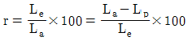
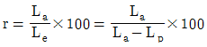
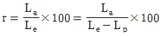
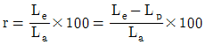
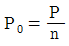
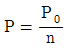

어로산업기사 (2017-05-07 기출문제)
1과목: 어구학
1. 중층 트롤 그물이 저층 트롤 그물과 비교해서 근본적으로 다른 점은?
- 전개판이 없다.
- 등판이 없다.
- 힘줄이 없다.
- 날개가 없다.
(정답률: 85%)

2. 코크기 50mm의 그물감을 사용하여 성형률 64%로 구성하고자 할 때 10cm 사이에 몇 코를 걸어야 하는가?
- 3.2코
- 4코
- 5코
- 9코
(정답률: 74%)
3. 다음 재료 중 주로 단섬유로 만들어지는 것이 아닌 것은?(오류 신고가 접수된 문제입니다. 반드시 정답과 해설을 확인하시기 바랍니다.)
- 비닐론
- 사란
- 쿠라론
- 면사
(정답률: 77%)
4. 신장회복도 r, 전신장도 La, 영구신장도 Lp, 탄성신장도 Le와의 관계는?




(정답률: 82%)
5. 장등 그물(길그물)과 가장 관계가 깊은 어구는?
- 자망
- 건착망
- 안강망
- 정치망
(정답률: 80%)
6. 어구 설계에 사용되는 약자 중 의미가 틀린 것은?
- MR: 힘줄
- GR: 발줄
- HR: 뜸줄
- LL: 후릿줄
(정답률: 92%)
7. 꼬임이 반대되는 2줄을 뜸줄로 사용하는 것이 적합하다고 여겨지는 그물은?
- 들그물
- 끌그물
- 유자망
- 정치망
(정답률: 84%)
8. 섬유 로프의 재료로 가장 많이 쓰이는 것은?
- PP
- PE
- PA
- PVC
(정답률: 73%)
9. 범포식 근해 안강망 어구에서 총 부력을 총 침강력보다 크게 하는 주 이유는?
- 유속의 증가에 따른 망코 감소를 줄이기 위해서
- 그물의 길이 증가에 비례하는 아궁이 면적을 확보하기 위해서
- 지착성 어류보다 뜬 고기류를 주로 어획하기 위해서
- 유속이 일정치 이하가 되면 그물을 해저로부터 부상시키기 위해서
(정답률: 84%)
10. 자망어구의 구성에 관하여 바르게 설명한 것은
- 얽애그물은 꽂히게 하여 잡는 그물보다 성형률을 많이 준다.
- 부력이 침강력보다 작으면 표층 걸그물이 된다.
- 자망어구의 그물감은 유연하고 강한 나일론 망지를 많이 쓴다.
- 자망어구의 그물코가 강하고 뻗힐수록 어획률이 좋아진다.
(정답률: 84%)
11. 그물실을 연소시켰을 때 양초 타는 냄새가 나는 것은?
- 폴리비닐클로라이드(PVC)
- 폴리에스테르(PES)
- 폴리아미드(PA)
- 폴리에틸렌(PE)
(정답률: 81%)
12. 섬유의 비응력 단위는?
- g
- mg
- g/Td
- g/mm2
(정답률: 92%)
13. 어구를 만드는 데 있어서 그물감에 80%의 성형률을 주었더니 48m 가 되었다. 이 그물의 원래 길이는?
- 40m
- 45m
- 50m
- 60m
(정답률: 91%)
14. 구형 뜸(Float)의 크기는 무엇으로 표시하는가?
- 둘레
- 직경
- 면적
- 체적
(정답률: 93%)
15. 합성섬유 그물실의 규격이 210D/24 F/6Z x 3S로 표시될 떄 그 단사(제1단계실) 수는?
- 18
- 24
- 72
- 144
(정답률: 87%)
16. 쌍끌이 기선저인망 어구의 설계에 관한 기준으로 틀린 것은?
- 그물의 폭 수는 일반적으로 4폭이다.
- 끌줄 길이는 통상 수심의 3 ~ 5배를 준다.
- 새 어장의 수심이 종전 어장 수심의 n배가 되면 끌줄 길이는 종전의 n배로 준다.
- 혀그물의 앞 끝은 자루 등판 길이의 1/3~1/4 되는 곳에 부착한다.
(정답률: 78%)
17. 다음 중 선단 조업을 하지 않는 어업은
- 권현망
- 안강망
- 근해 선망
- 멸치 들망
(정답률: 82%)
18. 합성섬유의 계통명 중 강도와 마찰에 강하며, 비중이 물보다 작은 것은?
- 폴리에틸렌(PE)
- 폴리아미드(PA)
- 폴리에스테르(PES)
- 폴리비닐클로라이드(PVC)
(정답률: 94%)
19. 가로 1m 세로 2m 인 만곡형 전개판을 2m/sec의 속도로 끌 때 전개력은? (단, 해수밀도는 100kg∙sec2/m4, 전개력은 개수는 1.4 이다.)
- 280kg
- 300kg
- 420kg
- 560kg
(정답률: 74%)
20. 정치망의 부분을 지칭하는 단어와 거리가 먼 것은?
- 길그물
- 헛통
- 등망
- 고리테
(정답률: 80%)
2과목: 어업기기학
21. 유자망 양망기 중 침자강만 기계로 올리는 방식의 좋은점이 아닌 것은?
- 장치가 소형이다.
- 조작이 간단하다.
- 어체의 손상이 없다.
- 그물의 파손이 없다.
(정답률: 81%)
22. 일반적으로 초음파 신호가 어체에 의해 반사될 때, 반사파 신호의 세기, 즉 어체의 반사강도는 어체 크기에 따라 어떻게 변하는가?
- 어체 크기에 비례하여 약해진다.
- 어체 크기에 반비례하여 강해진다.
- 어체 크기의 제곱에 비례하여 강해진다.
- 어체 크기에 비례하여 강해진다.
(정답률: 92%)
23. 트롤윈치의 역량을 결정하는 데 고려해야 할 사항과 가장 관련이 없는 것은?
- 예망속도
- 권양속도
- 끌줄의 길이
- 갑판상 점유 면적
(정답률: 73%)
24. 항해 시 어군탐지기의 잡음에 영향을 주는 요소와 가장 거리가 먼 것은?
- 기관의 진동
- 해저에 부설된 케이블
- 수심이 낮은 천해의 항해
- 조타의 효율
(정답률: 90%)
25. 수중 음속을 구하는 기본식에 필요한 계수가 아닌 것은?
- 수온
- 염분
- 압력(수심)
- 주파수
(정답률: 75%)
26. 어군탐지기의 송/수파기로 동일 방향에 수직적으로 분포하는 두 개의 끌표를 분리하여 탐지할 수 있는 최소한의 거리는?
- 수파감도
- 수신 시프트
- 방위 분해능
- 거리 분해능
(정답률: 89%)
27. 소나(sonar)에 관한 설명으로 옳은 것은?
- 어군의 방향, 거리, 심도 탐지가 가능하다.
- 수평에서 수직에 이르기까지 임의 방향 탐지가 불가능하다.
- 서치라이트 소나에서는 맹목구역이 생기지 않는 장점이 있다.
- 스캐닝 소나의 단점을 해소하기 위해 서치라이트 소나가 개발되었다.
(정답률: 93%)
28. 어업 기계의 구동에 사용되는 전동기 중 광범위하게 속도를 조정할 수 있는 것은?
- 정속 전동기
- 가변속 전동기
- 변속 전동기
- 분권 특성 전동기
(정답률: 84%)
29. 트롤 윈치를 구성하는 주요 부분이 아닌 것은?
- main drum
- brake band
- side drum
- warping head
(정답률: 88%)
30. 어군탐지기에 탐지된 개체 어류의 기록에 대한 설명으로 옳지 않은 것은?
- 어류의 수직 위로 어선이 지나가는 전후에 계속 수신 된다.
- 탐지하는 처음과 끝의 탐지거리는 연직하의 거리보다 크다.
- 기록 강도는 양끝에서 강하고 중심부에서 약하다.
- 기록 단면은 위로 볼록한 초승달과 같다.
(정답률: 85%)
31. 초음파의 특성에 관한 설명으로 옳지 않은 것은?
- 지향성이 있다,
- 온도 경도가 없으면 직진 한다.
- 수중 전파 속도는 약 1500m/s 이다.
- 주파수가 높을수록 흡수 감쇄는 작아진다.
(정답률: 91%)
32. 와이어 로프를 사용할 경우 원추형 원통의 경사각은 몇 도 정도 되어야 하는가?
- 13°
- 17°
- 22°
- 30°
(정답률: 84%)
33. 오징어 채낚시 어선이 조업할 떄 자동조획기와 함께 사용하는 것은?
- 주 기관
- 물돛
- 미끼
- 롤러
(정답률: 82%)
34. 기계의 일 손실이 있을 때의 일량을 P, 일 손실이 없을 때의 일량을 P0, 효율을 n 이라고 하면 그 관계식은?

- P0=P

- n = P0P
(정답률: 87%)
35. 수중에서 트롤 어구의 전개 상태를 정확하게 파악하기 위한 장치는?
- 네트 레코더
- 네트 존데
- 오터 그래프
- 텔레사운드
(정답률: 88%)
36. 네트 레코더 (Net recorder)의 구성 기기가 아닌 것은?
- 발신기
- 감쇠기
- 기록기
- 수파기
(정답률: 87%)
37. 유압펌프에 걸리는 동력이 10 마력이고 이때 흐르는 유량은 750cm3/sec 이다. 이 경우 생기는 유압은?
- 1kg/cm2
- 1.35kg/cm2
- 100kg/cm2
- 136kg/cm2
(정답률: 78%)
38. 오징어 자동조획기의 얼레가 타원형으로 되어있는 주 이유는?
- 회전 속도를 조절하기 위하여
- 낚싯줄에 걸리는 장력을 감소시키기 위하여
- 낚싯줄이 서로 얽히지 않게 하기 위하여
- 회전 시 속력의 차이를 이용하여 채낚는 동작의 역할을 하기 위하여
(정답률: 94%)
39. 선망어업에서 그물을 투망하여 그물 자락의 침강 상태를 정확하게 파악할 목적으로 사용된 장치는?
- 네트 존데
- 네트 리코더
- 텔레사운드
- 소나
(정답률: 87%)
40. 수중에서 움직이는 물체의 정보는 주로 어느것을 이용하는가?
- 음파
- 전파
- 빛
- 열
(정답률: 87%)
3과목: 어장학
41. 해양 생태계의 모든 생물을 맡은 역할에 따라 구분할 때, 그 구분에 속하지 않는 것은?
- 생산자
- 소비자
- 유기체
- 분해자
(정답률: 90%)
42. 태풍 접근의 전조에 대한 설명으로 옳지 못한 것은?
- 상층운이 빠르게 이동하면서 중층운으로 운고가 낮아질 떄
- 기압의 일변화가 규칙적일 때
- 습도가 이상적으로 상승할 때
- 상층운과 하층운의 운향이 반대가 될 때
(정답률: 94%)
43. 어군의 분포와 상태를 파악하는 데 있어 어떤 조사가 유효한가?
- 먹이생물조사
- 해수유동
- 조경탐사 및 수온분포 조사
- 용존산소량 분석
(정답률: 85%)
44. 해수면에 부는 바람에 의해 저층에서 표층으로 흐르는 흐름이 발생하는데, 이것을 무엇이라 하는가?
- 지형류
- 취송류
- 용승류
- 침강류
(정답률: 80%)
45. 다음 중 용승현상과 가장 관계가 깊은 것은?
- 탁도가 커진다.
- 표면수온이 낮아진다.
- 영양염류가 적어진다.
- 용존산소가 많아진다.
(정답률: 80%)
46. 어류의 생활사 중 해류의 영향이 가장 클 때는?
- 성어
- 난(알)
- 산란 직후의 성어
- 산란 직전의 성어
(정답률: 93%)
47. 태양 광선의 영향과 가장 관계가 있는 것은?
- 수중에서의 음속
- 조류의 변화
- 플랑크톤의 수직운동
- 어군의 수평방향 이동
(정답률: 92%)
48. 표면 수온분포에 관한 설명으로 옳지 않은 것은?
- 위도 30 ~ 50도 사이에서는 수평온도가 경도가 큰 곳이 많다.
- 적도-중위도에서는 대양서측 수온이 동측보다 낮다.
- 열적도는 보통 북위 5도 내지 10도 사이에 있다.
- 수평온도 경도가 작으면 등온선 간격이 넓다.
(정답률: 79%)
49. 태풍의 눈에 대한 설명 중 바르지 못한 것은?
- 눈 모양은 4각형에 가깝다.
- 푸른 하늘을 볼 수 있을 정도로 구름이 적어진다.
- 직경은 20 ~ 30km의 것이 많다.
- 주위에서 불어 들어간 기류는 눈 주위에서 돌면서 상승한다.
(정답률: 88%)
50. 인공위성에 의한 원격 탐사를 통해서 관측할 수 없는 것은?
- 구름의 양
- 엽록소의 양
- 해수면의 높이
- 심층수의 수온
(정답률: 89%)
51. 수산자원의 변동에 관련되는 4대 요소가 아닌 것은?
- 가입
- 성장
- 자연사망
- 기후
(정답률: 91%)
52. 어장을 오염시킬 수 있는 해양오염의 공급원과 가장 거리가 먼 것은?
- 산림, 농작물 등 경작 부산물의 유입
- 수송과정에 일어나는 유입
- 밀식 등에 의한 해양의 자가오염
- 대양화산폭발로 인한 부영양화
(정답률: 90%)
53. 염분에 관한 일반적인 설명으로 가장 거리가 먼 것은?
- 해수 1kg 속에 녹아 있는 염류의 총량을 g으로 나타낸 것이다.
- 주요 성분 전체의 상대적인 비율을 해양마다 다른 값을 가진다.
- 해수 중의 염소량으로 구할 수 있다.
- 전기 전도율을 이용한 측정방법을 많이 사용한다.
(정답률: 88%)
54. 해양 중의 수심이 10m 증가함에 따른 수압의 변화는?
- 0.5 기압 증가
- 1 기압 증가
- 2 기압 증가
- 5 기압 증가
(정답률: 85%)
55. 다음 해역 중 용존산소량이 가장 적은 곳은?
- 열대해염 표층
- 베링해의 저층
- 여름철의 거의 폐쇄된 내만의 표층
- 수온 약층의 아래쪽이나 저층
(정답률: 75%)
56. 다음 중 난류성 어류는?
- 꽁치
- 대구
- 명태
- 청어
(정답률: 80%)
57. 와류어장의 형성요인과 가장 거리가 먼 것은
- 역학적 와류
- 지형적 와류
- 복합적 와류
- 풍향적 와류
(정답률: 82%)
58. 우리나라 근해에서 참조기 어장이 형성되지 않는 해역은?
- 동해안
- 서해안
- 남해안
- 제주도 근해
(정답률: 87%)
59. 투명도판(Secchi disk)의 형태를 가장 잘 설명한 것은?
- 직경 약 30cm의 백색판
- 직경 약 30cm의 황색판
- 직경 약 35cm의 황색판
- 직경 약 35cm의 백색판
(정답률: 90%)
60. 우리나라 연근해 오징어채낚기어업에 주로 어획되는 오징어에 대한 설명으로 틀린 것은?
- 표준어는 살오징어이고, 이새아강 십완목에 속한다.
- 살오징어에는 연급군이라는 것은 없다.
- 팔은 촉완을 제외하고 등 쪽부터 앞 쪽 순으로번호를 붙인다.
- 살오징어 자원의 대부분을 차지하는 것은 여름 산란군이다.
(정답률: 78%)
4과목: 어법학
61. 수심이 200m인 해역에서 조업하는 트롤어구의 끌줄은 얼마를 주는 것이 가장 바람직한가? (단, 예망 시 해면을 고요하고 다른 특별한 조건이 없음)
- 100 ~ 200m
- 200 ~ 400m
- 400 ~ 600m
- 600 ~ 800m
(정답률: 84%)
62. 안강망 어구를 투망하는 경우 줄의 작업 순서는?
- 닻줄 → 고삐줄 → 배잡이줄 → 갈랫줄
- 닻줄 → 배잡이줄 → 고삐줄 → 갈랫줄
- 갈랫줄 → 닻줄 → 배잡이줄 → 고삐줄
- 갈랫줄 → 닻줄 → 고삐줄 → 배잡이줄
(정답률: 88%)
63. 헛통에서 머물던 고기가 비탈 그물을 거처 원통으로 들어가 어획이 보다 확실시 되는 어구는?
- 자망
- 낙망
- 낭장망
- 건착망
(정답률: 85%)
64. 조기 유자망 어구어법에 관한 설명으로 틀린 것은?
- 조기류는 대체로 저서성이므로 저층 유자망을 사용한다.
- 어구는 발줄이 해저에 닿을 듯 말듯 하면서 이동해야 하므로 침강력 ≥ 부력의 관계가 성립해야 한다.
- 어구의 성형률은 뜸줄에서 70%, 발줄에서 60% 정도로 한다.
- 조업은 일몰 전에 어장에 도착하여 좌현에서 어구를 투입하며 조류에 수직으로 부설한다.
(정답률: 82%)
65. 우리나라에서 멸치의 어획량이 가장 많은 어법은?
- 정치망
- 권현망
- 걸그물
- 챗배
(정답률: 81%)
66. 독일시 외끌이 중층트롤의 중요한 특징이 아닌 것은?
- 저속의 예망속도
- 면적이 큰 전개판 사용
- 소나와 네트존데 이용
- 방채 이용
(정답률: 79%)
67. 권현망 어업에서 대상 어군에 대한 1차적인 구집 역할을 하며, 3000 ~ 3600mm 정도의 코가 큰 그물로 구성된 부분은?
- 오비기
- 수비
- 섶
- 나팔
(정답률: 93%)
68. 현측식 트롤과 비교한 선미식 트롤의 특징 설명으로 틀린 것은?
- 계획 예망선상을 항주하면서 투망/예망할 수 있다.
- 저격적 어법을 쓸 수가 있다.
- 전개판의 전개간격이 좁다.
- 투/양망 시간이 훨씬 단축된다.
(정답률: 77%)
69. 안강망 어업의 주 어획대상 어종이 아닌 것은?
- 갈치
- 조기
- 부세
- 정어리
(정답률: 80%)
70. 선망 어법으로 어획하기 적합한 어군이라 할 수 없는 것은?
- 다랑어
- 명태
- 고등어
- 정어리
(정답률: 87%)
71. 기선 권현망에서 고기가 아래 쪽으로 도피하는 것을 방지하는 부분은?
- 오비기
- 수비
- 앞창
- 문턱
(정답률: 84%)
72. 같은 어선으로 조업하는 경우 2통 끌이 새우트롤이 1통 끌이에 비하여 유리한 점은?
- 소해 면적이 크다.
- 망고가 높아진다.
- 깊은 곳에서 조업이 가능하다.
- 인력이 적게 든다.
(정답률: 91%)
73. 자망어구의 설명으로 틀린 것은?
- 어구를 부설하는 수층에 따라 구분한다.
- 표층자망은 부력이 침강력보다 크다.
- 중층자망은 부력이 침강력보다 크다.
- 저층자망은 부력이 침강력보다 크다.
(정답률: 89%)
74. 낙망어구 부설어장의 선정요건으로 가장 거리가 먼 곳은?
- 조류가 가능한 른 해역, 즉 유속이 2.0 노트 이상한 해역
- 수심 80m를 한계로, 등심선이 가능한 육안에서 먼 해역
- 저질은 모래, 뻘 등이고 해저지형이 경사가 심하지 않은 해역
- 어업 근거지에서 가까운 해역
(정답률: 80%)
75. 멸치 소대망에서 양망을 할 때 원통입구 부근에 있는 어군이 도피하지 못하도록 하는 장치는?
- 칸막이 그물
- 앞치마
- 옆그물
- 통그물
(정답률: 81%)
76. 선망어업에어 어군의 도피 깊이를 지배하는 가장 큰 요소는?
- 어군의 유영능력과 유영심도
- 어군의 분포 형태와 그물에 대한 행동
- 어구의 투망속도와 침강속도
- 해저와 수온약층
(정답률: 56%)
77. 근해 안강망의 주 대상 어종은?
- 갈치
- 병어
- 까나리
- 밴댕이
(정답률: 82%)
78. 건착망의 그물감 배열에서 전체의 길이를 50등분한 하나의 종대에 사용된 망지의 뻗힌 길이가 30m였고 여기에 가해진 성형률은 70%였다. 완성된 전체 길이는?
- 1⑤0m
- 1200m
- 1350m
- 1500m
(정답률: 81%)
79. 다랑어 주낙에 대한 설명으로 틀린 것은?
- 1절의 길이는 45 ~ 50m의 범위에서 정한다.
- 어구의 규모는 절수와 광주리의 총수로 표시한다.
- 부표줄의 길이는 50 ~ 60m 정도이다.
- 부표줄의 길이는 날개다랑어 주낙이 황다랑어 주낙보다 더 길다.
(정답률: 77%)
80. 다랑어 주낙의 투승 시 낚시의 심도를 증가시키는 방법으로 틀린 것은?
- 부표줄을 길게 한다.
- 모릿줄 1절의 길이를 길게 한다.
- 아릿줄의 길이를 길게 한다.
- 단축률을 크게 한다.
(정답률: 80%)